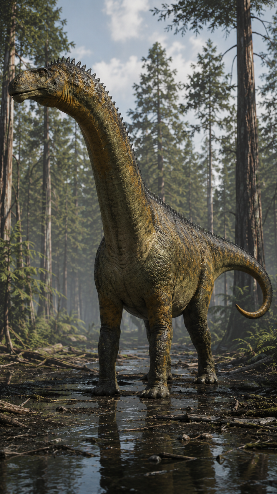
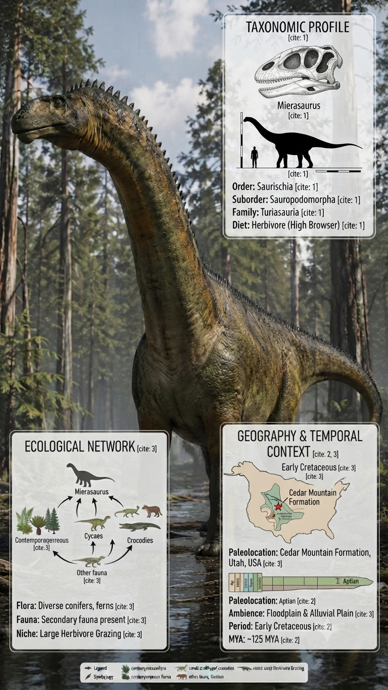
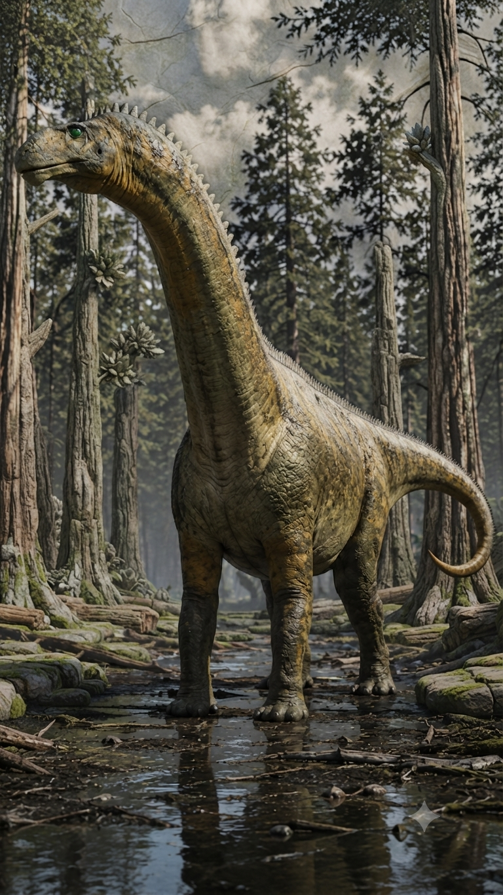

Paleoficha de PalEntropía



TAXÓN:
Mierasaurus bobyoungi
CLADO:
Somphospondyli (Titanosauriformes)
DIETA:
Herbívoro (ramoneador de altura mediante cuello alargado)
TAMAÑO:
Aproximadamente entre 6 y 10 metros de longitud.
LOCOMOCIÓN:
Cuadrúpeda obligada; estructura ósea robusta para soportar grandes cargas.
TIEMPO:
Cretácico Inferior (Barremiense), aproximadamente hace 125 millones de años.
GEOGRAFÍA:
Formación Cedar Mountain, Utah, Norteamérica.
EQUIVALENCIA PALEOGEOGRÁFICA:
Cuencas sedimentarias interiores bajo un clima subtropical con marcada estacionalidad.
AMBIENTE PALEAOECOLÓGICO:
Llanuras de inundación dominadas por coníferas, cicadáceas y canales fluviales efímeros.
ECOLOGÍA:
• Flora: Bosques abiertos de coníferas, cícadas y helechos arborescentes.
• Fauna secundaria: Convivía con el gran dromeosáurido Utahraptor, el anquilosaurio Gastonia y otros herbívoros del ecosistema de Cedar Mountain.
• Nichos: Megaherbívoro especializado en el ramoneo de vegetación de media altura gracias a su largo cuello, reduciendo la competencia con otros dinosaurios herbívoros.
• Relaciones: Su presencia demuestra una conexión temprana entre las faunas de Europa y Norteamérica durante el Cretácico Inferior, siendo un taxón clave para comprender la dispersión de los titanosauriformes.
CLIMA:
Wm9 (Subtropical semiárido). Clima cálido con marcada estacionalidad de humedad y periodos de aridez que condicionaban los desplazamientos de la megafauna.
ESTADO ECOLÓGICO:
Estable. Mierasaurus constituye una evidencia fundamental para comprender la expansión de los titanosauriformes basales y la interconectividad faunística entre los continentes del hemisferio norte durante el Barremiense.